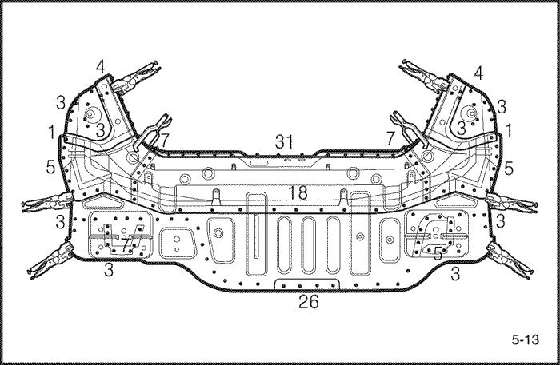
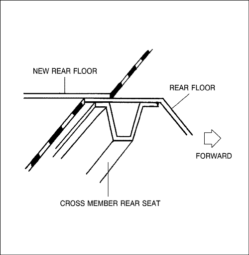

- Desmonte los componentes asociados.
- Componentes a quitar cuando se vaya a desmontar el panel trasero.
- Cinturón de seguridad del asiento trasero y el asiento trasero.
- Silenciador, depósito de combustible y componentes asociados.
- Componentes del chasis.
- Otros componentes asociados.
Precaución: No fume mientras esté trabajando cerca del sistema de alimentación de combustible. Mantenga las llamas desnudas alejadas del sistema de alimentación de combustible. Si fuera necesario, desmonte el depósito de combustible y las tuberías del mismo.
- Desabolle y enderece la zona dañada.
- Evalúe el daño, y después de colocar el coche en la bancada, desabolle y repare el panel trasero, el panel lateral, la parte interior del paso de rueda, el larguero trasero y otros componentes dañados, antes de desmontar el panel del piso trasero suplementario, el panel del piso trasero y el panel trasero.
- Fije el coche a la bancada apretando las abrazaderas de los bajos de la carrocería situadas en los puntos destinados para la colocación del gato, en la parte inferior del vano de puertas del bastidor.
Nota: Para tomar medidas, utilice como referencia las dimensiones que aparecen en la tabla de reparación de la carrocería.
- Corte y extraiga el panel trasero.
- Para desmontar el panel trasero es necesario cortarlo y extraerlo haciendo palanca.
- Corte y extraiga el panel del piso trasero y el panel del piso trasero suplementario.
- Corte el panel del piso trasero y el panel del piso trasero suplementario con un soplete de gas o un cincel neumático, dejando las pestañas soldadas por puntos del larguero trasero a lo largo de la línea resaltada en negrita como se muestra en la figura.
Nota: Corte el panel del piso trasero a 15 mm (0,59 pulg.) de la pestaña soldada del travesaño del asiento trasero.
- Granetee la zona alrededor de las marcas de los puntos de soldadura del larguero trasero, el larguero trasero suplementario y la placa central del piso.
- Utilice la fresa especial cortapuntos para taladrar los puntos de soldadura en el centro de las zonas graneteadas.


Nota: Cuando esté taladrando, tenga cuidado de no perforar el larguero trasero, el larguero trasero suplementario ni la placa central del piso.
- Corte y extraiga el panel del piso trasero y el panel del piso trasero suplementario con un cincel neumático, dejando intactas las pestañas para soldar.
- Empareje y dele acabado a las rebabas de las soldaduras por punto, con una lijadora de disco, y repare con soldadura todas las grietas, agujeros y otros defectos; repare también el larguero trasero y el larguero trasero suplementario si fuera necesario.
Precaución: Utilice gafas de protección abiertas o cerradas siempre que vaya a lijar, cortar o esmerilar para evitar lesiones en los ojos.

- Quite la capa de imprimación y el sellador.
- Caliente la capa de imprimación y el sellador, con un soplete de gas, en las zonas soldadas del paso de rueda y del larguero, y levante la capa de imprimación y el sellador con una espátula de acero.
- Enderece los componentes asociados que se hayan abollado.
- Utilice un martillo y un tas para enderezar las zonas dañadas del larguero trasero y del larguero trasero suplementario.
- Empareje las pestañas para soldar, con martillo y tas.
- Rellene con soldadura cualquier orificio que se haya hecho al quitar la soldadura por puntos.
Precaución: Para evitar lesiones en los ojos y quemaduras cuando esté soldando, utilice una careta para soldar, guantes y zapatos de seguridad homologados.
- Rebaje y quite los restos de la soldadura por puntos con una lijadora de disco.
- Lije ambos caras de la pestaña que vaya a soldar para quitarle la pintura y la capa de imprimación.
- Corte el piso trasero nuevo, alinéelo con la carrocería, y coloque luego el nuevo piso trasero y el piso trasero suplementario.
- Corte el nuevo componente de forma que se solape sobre el travesaño del asiento trasero aproximadamente 40 mm (1,57 pulg.).

- Lije ambas caras de la sección que se vaya a soldar, con una lijadora de disco, para quitarle la pintura y dejar expuesta la chapa de acero.
Precaución: Utilice gafas de protección abiertas o cerradas siempre que vaya a lijar, cortar o esmerilar para evitar lesiones en los ojos.
- Coloque el nuevo panel en su posición y sujételo con mordazas de presión.
Nota: Se recomienda la utilización de plantillas para poder colocar los componentes en su posición correcta y para verificar que ambos largueros estén paralelos uno con respecto al otro.
- Dele unos puntos de soldadura a las secciones sujetadas mediante mordazas de presión, para montarlas provisionalmente.
Precaución: Para evitar lesiones en los ojos y quemaduras cuando esté soldando, utilice una careta para soldar, guantes y zapatos de seguridad homologados.
- Desmonte las mordazas de presión y monte, provisionalmente, el panel trasero, y compruebe luego la alineación, las diferencias de nivel y la apariencia exterior.
- Elimine la soldadura principal.
- Suelde el piso trasero nuevo y el travesaño del asiento trasero con un cordón de soldadura de ángulo recto y un soldador MIG, como se muestra en la figura.

- Suelde por puntos el piso trasero y el piso trasero suplementario con las pestañas del larguero trasero y las pestañas de la placa central del piso, según se muestra en la figura.
Precaución: Para evitar lesiones en los ojos y quemaduras cuando esté soldando, utilice una careta para soldar, guantes y zapatos de seguridad homologados.
- Haga primero una soldadura de prueba, y verifique la calidad de la misma.
- Aumente el número de puntos de soldadura en un 20 % en las zonas que vayan a ser soldadas por puntos.
- Suelde el panel trasero.
- Cuando se haya sustituido el panel trasero, suéldelo.
- Dele acabado a las secciones soldadas.
- Rebaje con una lijadora de disco las zonas soldadas con soldadura MIG y luego empareje los puntos altos con un martillo, teniendo cuidado de no deformarlos.
Precaución: Utilice gafas de protección abiertas o cerradas siempre que vaya a lijar, cortar o esmerilar, para evitar lesiones en los ojos

- Utilice un martillo y un tas para emparejar las zonas soldadas por puntos a fin de lograr un buen ajuste en las superficies de las pestañas.
- Aplique el sellador.
- Aplique el sellador en las zonas de solape del piso trasero y del piso trasero suplementario, y las superficies soldadas del panel que hace contacto con éstos, y selle completamente todos los espacios intermedios.
- Aplique la capa de imprimación.
- Aplique una capa de imprimación al paso de rueda trasera y a la parte exterior del panel lateral.
- Aplique la pintura.
- PRECAUCIÓN
- Ventile bien el local cuando esté pintando. La mayoría de las pinturas contienen sustancias que resultan nocivas si se inhalan o ingieren. Lea detenidamente la etiqueta de la lata de pintura antes de abrirla.
- Evite el contacto con la piel. Cuando vaya a pintar, utilice máscara, guantes y gafas homologadas para este trabajo, así como ropas adecuadas.
- La pintura es inflamable. Almacénela en un lugar seguro y manténgala alejada de chispas, llamas y cigarrillos.
- Aplique el material insonorizante.
- Limpie el habitáculo y el compartimento del maletero.
- Aplique el material insonorizante sobre la superficie del panel del piso trasero y del panel del piso trasero suplementario.

- Monte los componentes asociados.
- Móntelos en la misma secuencia en que los desmontó, pero en orden inverso.
- Compruebe y ajuste
- Holguras y diferencias de nivel.
- El funcionamiento del mecanismo de cierre y apertura del maletero.
- El funcionamiento de todos los otros componentes asociados.
- Si hay infiltraciones de agua en el compartimento del maletero.
Nota: Utilice la hoja de comprobación que se especifica para la comprobación del funcionamiento.